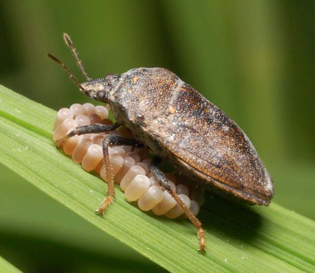
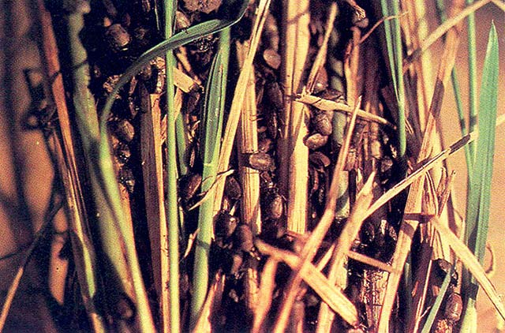

Black Bug 
Three species of black bugs attack rice: common black bug , Malayan black bug and, Japanese rice black bug .
What it does?
Black bugs remove the sap of the plant. They can cause browning of leaves, deadheart, and bugburn. Their damage also causes stunting in plants, reduced tiller number, and formation of whiteheads.
On severe cases, black bugs weaken the plant preventing them from producing seeds.
Why and where it occurs
The insect is common in rainfed and irrigated wetland environments. It prefers continuously cropped irrigated rice areas and poorly drained fields. Damages are observed more frequently in dry season rice crops and densely planted fields.
Black bug flight patterns are affected by the lunar cycle; on full moon nights, large numbers of adults swarm to light sources.
Staggered planting of the rice crop and excessive nitrogen also favor the buildup of the pest. During non-rice periods, the presence of alternate breeding site favors population increase.
How to identify
- -> Check leaves for discoloration. Black bug damage can cause reddish brown or yellowing of plants. Leaves also have chlorotic lesions.
- -> Check for decreased tillering. Bugburn symptoms show wilting of tillers with no visible honeydew deposits or sooty molds.
- -> Plants are also stunted; and can develop stunted panicles, no panicles, incompletely exerted panicles, and unfilled spikelets or whiteheads at booting stage.
- -> Check for deadhearts.

Deadhearts can also be caused by stemborer. To confirm cause of damage, pull infected plants. In black bug damage, infected plants cannot be pulled at the bases.
Heavy infestation and "bugburn" is usually visible after heading or maturing.
Why is it important
Black bug feeds on the rice plant from seedling to maturity growth stages. Ten black bug adults per hill can cause losses of up to 35% in some rice.
How to manage
To prevent black bug infestation:
- -> Use resistant varieties.
Contact your local agriculture office for up-to-date lists of varieties available. - -> Maintain a clean field by removing the weeds and drying the rice field after plowing.
- -> Plant rice varieties of the same maturity date to break the insect’s cycle.
- -> Use of mercury bulbs as light traps for egg-laying adults, light trapping of insects should start 5 days before and after the full moon.
- -> Encourage biological control agents, such as small wasps (parasitize the eggs), ground beetles, spiders, crickets, and red ants (attack the eggs, nymphs, and adults), coccinellid beetles, ducks, toads (feed on eggs and nymphs), fungi species (attacks nymphs and adults).
To control black bug infestation:
- During early infestation, raise the water level in the field for 2−3 days to force the insects to move upwards.
- Flood the fields. This can cause higher egg mortality.
- After harvest, plow fields to remove remaining insects.
Disclaimer: All information are taken from http://www.knowledgebank.irri.org/